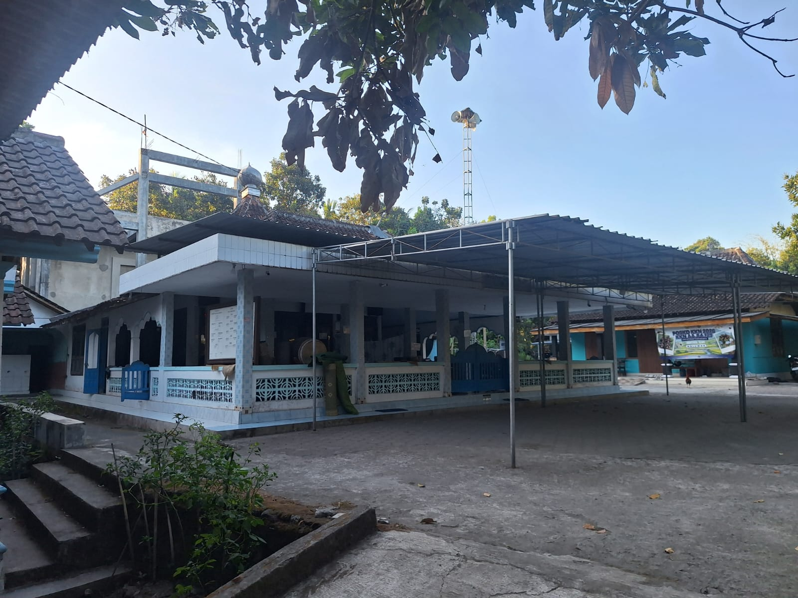
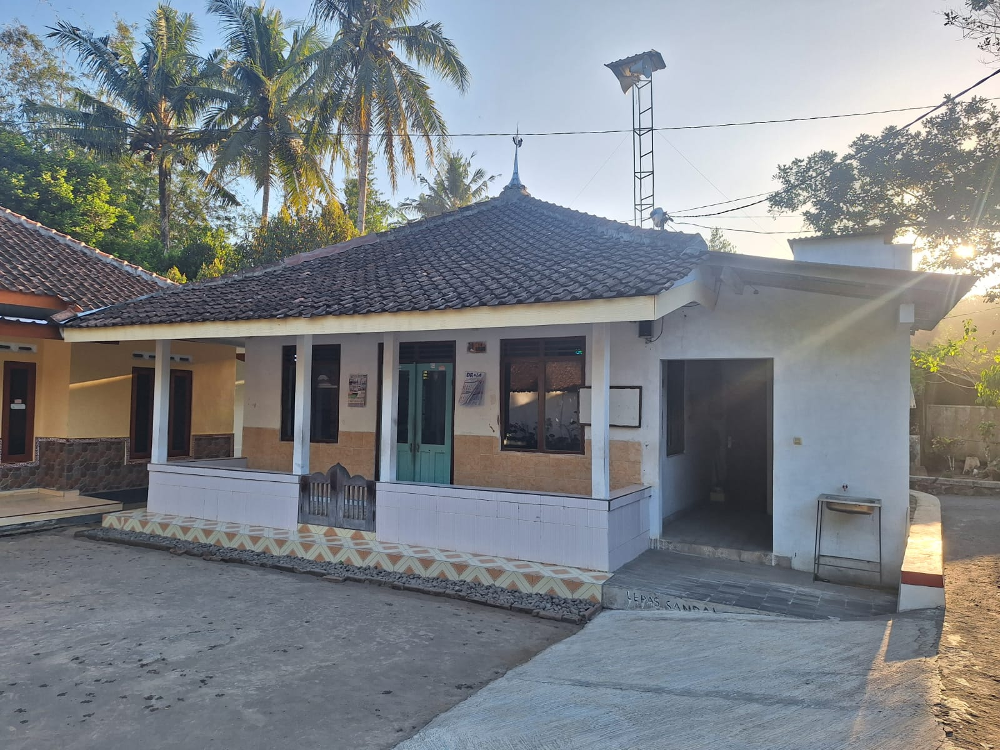
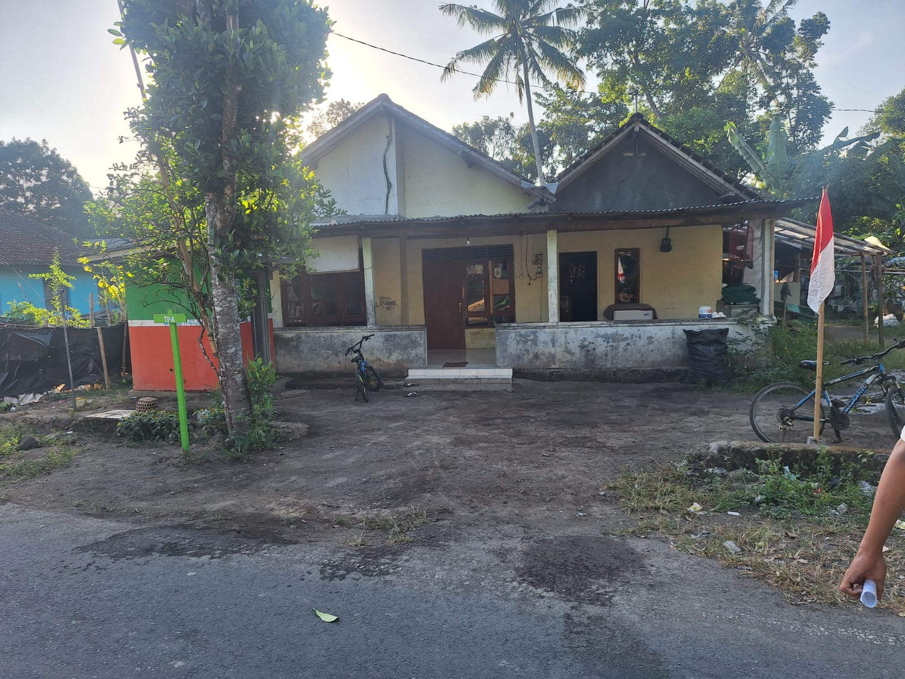
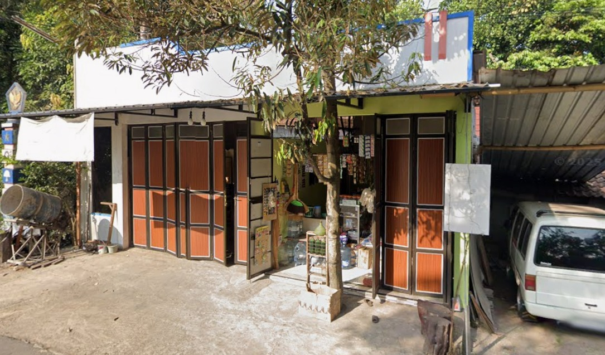
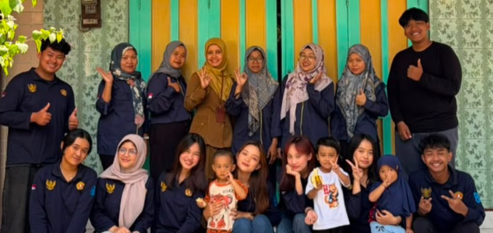
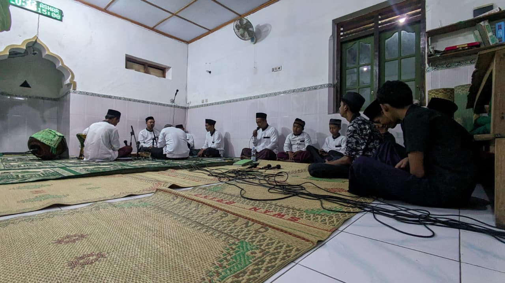
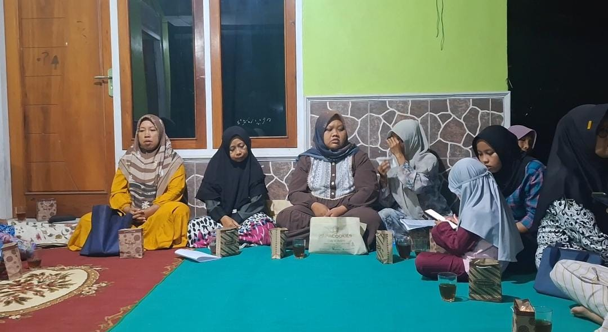
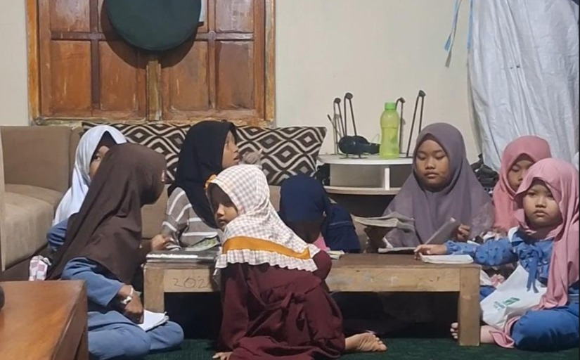

Sebuah wadah informasi berbasis digital untuk menjelajahi potensi desa, produk UMKM lokal, kegiatan kemasyarakatan, dan kehangatan tradisi warga Dusun Gondangan Kidul.
Dusun Gondangan Kidul terletak di batas paling tenggara Desa Pakunden, Ngluwar, yang berbatasan langsung dengan Kabupaten Sleman, D.I. Yogyakarta di tepi Kali Krasak. Memiliki lanskap agraris nan asri di kaki Gunung Merapi, dusun ini hidup dengan semangat gotong royong, tradisi Jawa yang kental, serta potensi ekonomi lokal seperti produksi emping melinjo dan olahan camilan warga. Harmoni kearifan lokal dan keramahan masyarakatnya menjadikan Gondangan Kidul lingkungan yang hangat, mandiri, dan selalu terasa homey.
Gambaran mengenai mata pencaharian dan tingkat pendidikan warga Dusun Gondangan Kidul.
Beberapa titik penting dan bersejarah di sekitar Dusun Gondangan Kidul yang dapat dikunjungi.

Mata air alami yang menjadi sumber kehidupan dan tempat bersejarah bagi warga sekitar.
Lokasi


Beragam usaha mikro, kecil, dan menengah hasil karya warga Dusun Gondangan Kidul yang patut untuk didukung.


Usaha percetakan batako dengan kualitas terbaik dan harga terjangkau.
Lokasi

Momen-momen kegiatan KKN bersama masyarakat Dusun Gondangan Kidul.

Kegiatan posyandu bersama warga Dusun Gondangan Kidul.

Kegiatan hadroh bersama warga Dusun Gondangan Kidul.

Kegiatan doa dan perbaikan diri bersama warga sekitar.

Kegiatan belajar membaca Iqro dan Al - Quran bersama adik - adik.